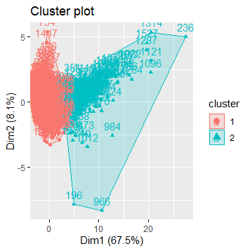

Conclusion Results
Visualizing the results: 
Conclusion and Final Results
In cluster 1, the average number of wins is 59.2
In cluster 2, the average number of wins is 755
Differentiating between Great and Bad Players
Could add a 3rd cluster, but it would not be ideal